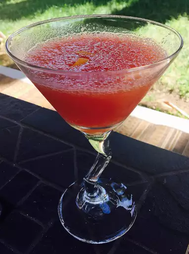

Watermelon Slush

Easy To Make Drink for Relaxation
This slushie recipe makes the best alcoholic slushie that adults can enjoy. Makes enough for two bowls. This is our Christmas Eve tradition and there is never a drop left!
Ingredients
- 4 cups watermelon flesh, seeds removed
- 2 fluid ounces simple syrup
- 2 tablespoons lemon juice
- 1 cup vodka
- 2 fluid ounces melon liqueur
- 4 twists lemon zest, garnish
Steps
- In a food processor, puree the watermelon flesh. Pour the pureed watermelon into empty ice cube trays and freeze for at least 4 hours. Also, freeze 4 martini glasses.
- In a blender combine the frozen watermelon cubes, simple syrup, lemon juice, vodka, and melon liqueur; blend until smooth. Pour into 4 frozen martini glasses and garnish each with a lemon twist.